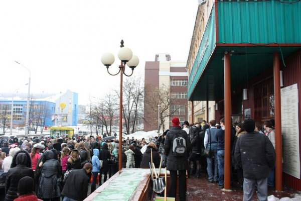

Сообщения о минировании зданий и учреждений захлестнули Россию с начала марта. Счёт сообщений о бомбах в зданиях российских вузов (в основном это коснулось вузов) давно идёт на десятки. В марте сотрудники правоохранительных органов уже получали сообщения о якобы заложенных бомбах в вузах Сахалина, Оренбурга, Ижевска, Горно-Алтайска, Омска, Абакана, Твери, Екатеринбурга и многих других.

Эту волну лжетерроризма отличает прежде всего то, что преступники перестали пользоваться телефонами. Согласно сообщениям пресс-служб и информационных агентств лжетеррористы в полной мере освоили современные интернет-технологии. Правоохранительные органы говорят о том что сообщения о якобы заложенных бомбах были получены по электронной почте.
Что это значит? Это значит что с данным видом преступлений нет никакой возможности бороться.
Я сейчас не могу припомнить ни одного случая, когда сообщение о якобы заложенной бомбе подтвердилось, но количество лживых сообщений исчисляется сотнями, а количество людей, которые вместо своего обычного распорядка вынуждены толпиться у дверей зданий, в которых работают собака с полицией тысячами.
Причин преступлений может быть несколько.
1. Звонки инициируются людьми, которые заинтересованы в ужесточении правил безопасности. Давайте поставим камеры наблюдения. Везде. В вашей ванной тоже. Тут у нас знаете ли такой терроризм. Для вашей же безопасности.
2. Звонки совершаются для снижения бдительности. С данным видом преступлений бороться нельзя, а значит еще немного и отрабатывать подобные выезды станут абы как. Ситуацией могут воспользоваться и настоящие террористы.
3. Банальная глупость и хулиганство. Практиковавшиеся еще недавно телефонные розыгрыши (пранк) одного человека почти исчезли с исчезновением стационарной телефонной связи. Сейчас можно безнаказанно разыгрывать целые вузы.
Какие правоохранительные органы для себя сделают выводы узнаем уже скоро, но кажется, что так и будем отменять занятия пока не надоест.
Один из первых пранков «Бабка АТС», кстати, был создан в 1998 году в Кемерово.
Ссылки по теме